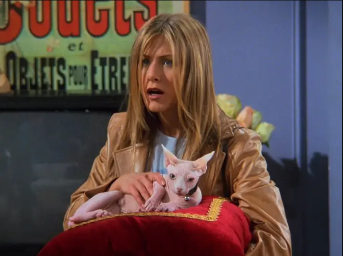

Dizi Hakkında
Friends, David Crane ve Marta Kauffman tarafından yaratılmış Amerikan yapımı sitcom türünde bir dizidir. 22 Eylül 1994 ile 6 Mayıs 2004 tarihleri arasında NBC'de yayımlanan dizi, on sezon sürdü. Manhattan'da yaşayan bir grup arkadaşın hayatı üzerinde dönen dizi, Warner Bros. Television şirketine bağlı Bright/Kauffman/Crane Productions yapımıdır. Yönetici yapımcıları Kevin S. Bright, Marta Kauffman ve David Crane'dir.
Karakterler
Rachel Green
Moda tutkunu, Central Perk'in favori müdavimi.
Ross Geller
Paleontolog, Monica'nın kardeşi ve dinozor hayranı.
Monica Geller
Titiz şef, Ross'un kardeşi, grubun annesi.
Joey Tribbiani
Aktör ve pizzasever, “How you doin'?” repliğiyle ünlü.
Phoebe Buffay
Eksantrik, sokak şarkıcısı, Smelly Cat'in sahibi.
Chandler Bing
Sarkastik esprileriyle bilinir, Monica'nın eşi.
Favori Sahnem: PIVOT!
“PIVOT!” sahnesi, Ross’un yeni bir kanepeyi Rachel ve Chandler’la birlikte dar bir merdivenden yukarı taşımaya çalışırken defalarca “Pivot!” diye bağırdığı ikonik bir sahnedir. Komik diyalogları ve Ross’un bitmeyen ısrarı, bu sahneyi dizinin en unutulmaz anlarından biri yapıyor.
Bölüm Listesi
1. Bölüm
The One Where Monica Gets a Roommate
Rachel gelinlik içinde Central Perk’e gelir, arkadaş grubuna katılır.
2. Bölüm
The One with the Sonogram at the End
Ross eski eşi Carol’ın bebeğini öğrenir, Rachel ilk işini bulmaya çalışır.
3. Bölüm
The One with the Thumb
Phoebe yanlışlıkla banka hesabına para gelir, karmaşık olaylar döner.

4. Bölüm
The One with George Stephanopoulos
Kızlar ünlü komşunun pizzasını alır, Ross ve Chandler maç izler.
5. Bölüm
The One with the East German Laundry Detergent
Rachel çamaşır yıkamayı öğrenir, Ross yardımcı olur.